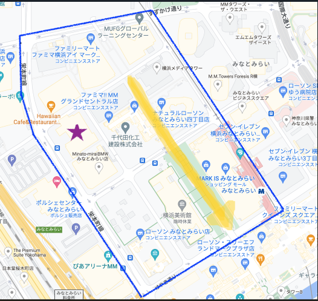

移動観察について
観察場所

みなとみらいキャンパスの後ろの道からランドマークプラザに続く道で観察しました。
観察するもの
- 観察したもの 男女の服装の暖色・かんしょくについて
- 観察対象 町中の歩く人たち
- 観察時間 30分
- 焦点 全身の服装について
- 調査方法 班の全員で寒色・暖色を決める
- 予想 秋なので温かみのある暖色がある服装が多いのではないか
観察の様子
観察結果
まとめ・感想
男性は寒色の人が多くまた寒色の中でも黒色のような色が多く感じた。
女性は意外と暖色が多く感じた。
合計すると男女ともに寒色系の色が多く感じた。
観察してみて動画を見てもらうとわかりますが、普段観察をしないことを観察することでとても楽しく色々な気づきがあるともいました。
普段観察しないところを観察すると意外とわかることもあるということを学びました。